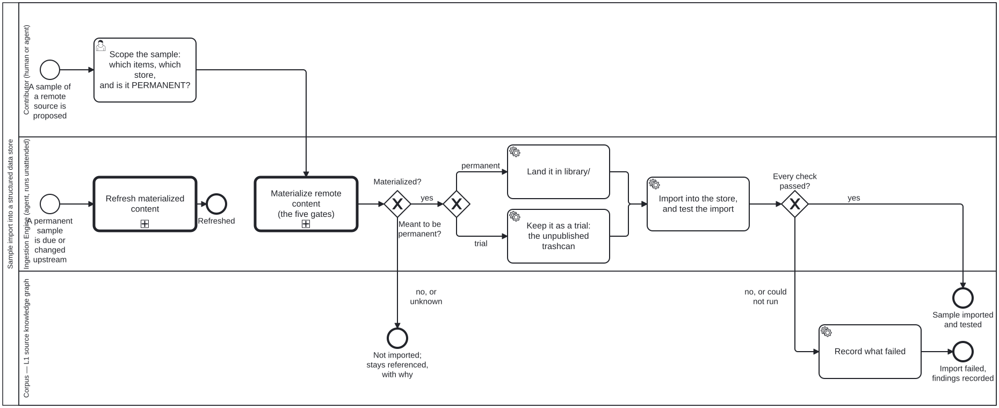

Generated from
cat-harness/processes/library/sample-import.bpmnbygen-processes-viz.ts— do not edit here. All processes
Process_SampleImport · strict · 7 step(s)
The SDLC for testing an import of a SAMPLE of a remote source into a knowledge graph or other structured store. The owner, 2026-09-20: “this is also a SDLC process to be developed for testing a sample import into a KG (or generally structued data store), issues of data size, retention - what happens if data srouce goes away, copyright.” General, not WHO-specific: IRIS is the worked instance, and who-iris/ is what this is exercised on.
THE GATES ARE CALLED, NOT COPIED. Size, restrictions, copyright, retention and source loss live once, in materialize-remote.bpmn (bean hpax: “neither has its own copy of the four gates”). This process branches on that call’s OUTCOME, so a gate refused there is a refusal here and there is no second copy to drift.
WHERE A SAMPLE LANDS depends on whether it is meant to last. The owner, 2026-09-23: “if sample-import is not inteded to be permannet, materliase to fsh-guts”. A permanent sample goes to library/ and is kept current by refresh-materialized.bpmn. A trial goes to fsh-guts/: kept, addressable, never published, and never refreshed, because a trial is evidence of what the source looked like when it was tried.

| lane | role | what it does here |
|---|---|---|
| Contributor (human or agent) | user |
One decision, and it is the one no file answers: what the sample is FOR. Which items, into which store, and whether the result is meant to last. The last question decides the destination, and asking it after the copy exists would mean moving a copy that was already landed somewhere under the wrong obligations. |
| Ingestion Engine (agent, runs unattended) | ingestion-agent |
Calls the two shared subprocesses and does the part that is this process’s own: landing the copy in the destination the contributor chose, importing it into the store, and testing the import. It never re-asks a gate: it acts on materialize-remote’s outcome. It also answers the second entry, an upstream change to a permanent sample, by calling refresh-materialized rather than re-importing. |
| Corpus — L1 source knowledge graph | corpus |
Every path ends here with something written down. A refused sample stays referenced with the refusing gate’s reason, a failed import records what failed, and a passed one records where it landed. None ends in silence, because an import nobody can tell was tried is the one somebody tries again. |
Every one of the 7 step(s) is documented.
| step | lane | skill / sub-process | what it does |
|---|---|---|---|
Scope the sample: which items, which store, and is it PERMANENT?Task_Scope |
Contributor (human or agent) | sample-import |
Three answers, recorded before anything is fetched. WHICH ITEMS: named by the source’s identifiers, or by a subset strategy its descriptor supports. WHICH STORE: the knowledge graph or other structured store the import is tested against. PERMANENT OR TRIAL: a permanent sample lands in library/ and is refreshed; a trial lands in fsh-guts/ and is not. The purpose materialize-remote asks for (working or archival) is asked there, not here. |
Materialize remote content (the five gates)Call_Materialize |
Ingestion Engine (agent, runs unattended) | calls Materialize remote content — the shared subprocesssample-importmaterialize-remote |
The shared subprocess. It resolves the request against the source descriptor, then asks size, restrictions, copyright, retention and source loss, and either fetches with fixity or leaves the content referenced. This process does not restate any of that; it waits for the outcome. |
Land it in library/Task_Library |
Ingestion Engine (agent, runs unattended) | sample-import |
A permanent sample joins the library as an L1 source, with the materialization record (purpose, gates, fixity) beside it. From here refresh-materialized governs it. |
Keep it as a trial: the unpublished trashcanTask_Trial |
Ingestion Engine (agent, runs unattended) | sample-import |
A trial goes to the kept trashcan: addressable, exported, never published. Its node declares $schema: folio-fsh-guts/v1 and carries the bean or issue it was written under, since it was never moved from anywhere and a movedFrom would be invented provenance. It is NOT refreshed: a trial records what the source looked like when it was tried. Promoting a trial means running this process again with permanent = yes, so the gates are asked afresh. |
Import into the store, and test the importTask_ImportTest |
Ingestion Engine (agent, runs unattended) | sample-import |
The part only this process does. Load the landed sample into the chosen store and check what an import can get wrong: every item arrived (count against the request), identifiers survived (the descriptor’s authoritative ones), structure validates against the store’s schema, and provenance (source, revision, fixity) is attached to each node. A check that could not run is a failure, not a pass. |
Record what failedTask_RecordFindings |
Corpus — L1 source knowledge graph | sample-import |
Which check failed, on which items, and the evidence. The landed copy is not removed: a failed import is information about the source or the store, and deleting the copy would destroy the evidence. |
Refresh materialized contentCall_Refresh |
Ingestion Engine (agent, runs unattended) | calls Refresh materialized remote contentsample-importmaterialize-remote |
Refresh is not re-import: what changed upstream, what changed locally since, and what to do when both did. The shared subprocess answers all three, and re-asks the five gates, since a licence can change and a collection can grow past the size agreed. |
Every one of the 3 decision(s) is documented.
| decision | what decides it | branches |
|---|---|---|
Materialized?Gateway_Materialized |
Read off materialize-remote’s end state, never re-decided. referenced (any gate refused or unknown) ends the sample here; materialized continues. |
yes → Meant to be permanent? no, or unknown → Not imported; stays referenced, with why |
Meant to be permanent?Gateway_Permanent |
The answer from Task_Scope. There is no default, and none is needed here: Task_Scope does not complete until permanence is stated, so an unscoped sample never reaches this gateway. | permanent → Land it in library/ trial → Keep it as a trial: the unpublished trashcan |
Every check passed?Gateway_Passed |
All of them, and each one ran. Anything else goes to Task_RecordFindings. | yes → Sample imported and tested no, or could not run → Record what failed |